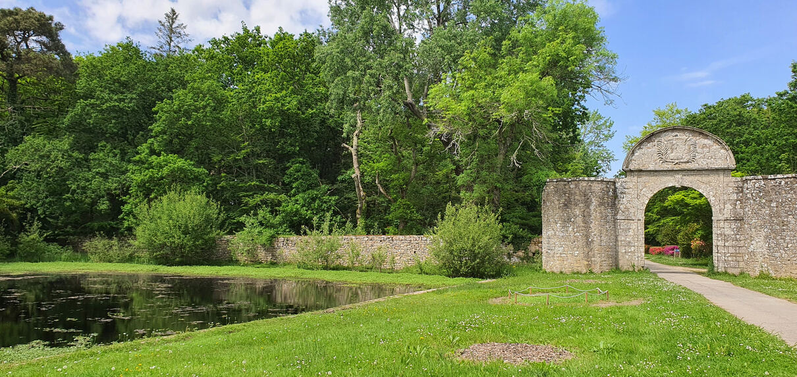
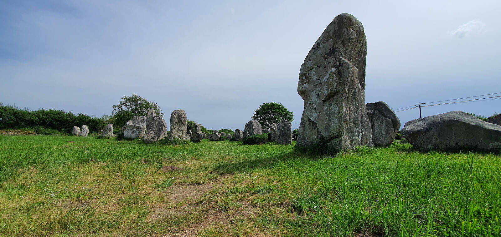
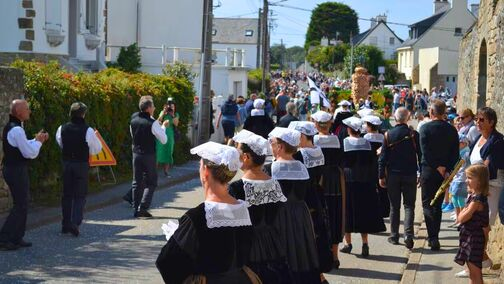
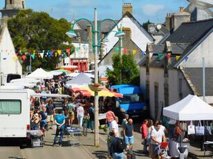
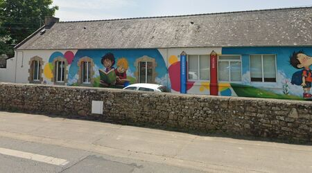

01 — Erdeven, entre terre et océan
La nature en grand format
Nichée au cœur du littoral morbihannais, Erdeven est un village balnéaire où la nature s'exprime en grand format : 8 km de plages sauvages, des dunes protégées et des sentiers côtiers pour respirer, marcher, se ressourcer.






Plages et nature
La plage de Kerhillio, immense et familiale, est un spot réputé pour le kite et le char à voile. Les plages plus intimes de Kerminihy ou Kerouriec invitent à la baignade tranquille. Un réseau de pistes cyclables et de chemins de randonnée relie la mer, les bois et les villages voisins.
Patrimoine et histoire
Dolmens, menhirs, chapelles et villages de pierre rappellent que ce territoire est un véritable musée à ciel ouvert, habité depuis des millénaires. Les alignements de Kerzerho, à l'entrée du bourg, comptent parmi les plus impressionnants de Bretagne. À 15 minutes d'Auray, Erdeven combine l'esprit village et l'ouverture sur le monde.